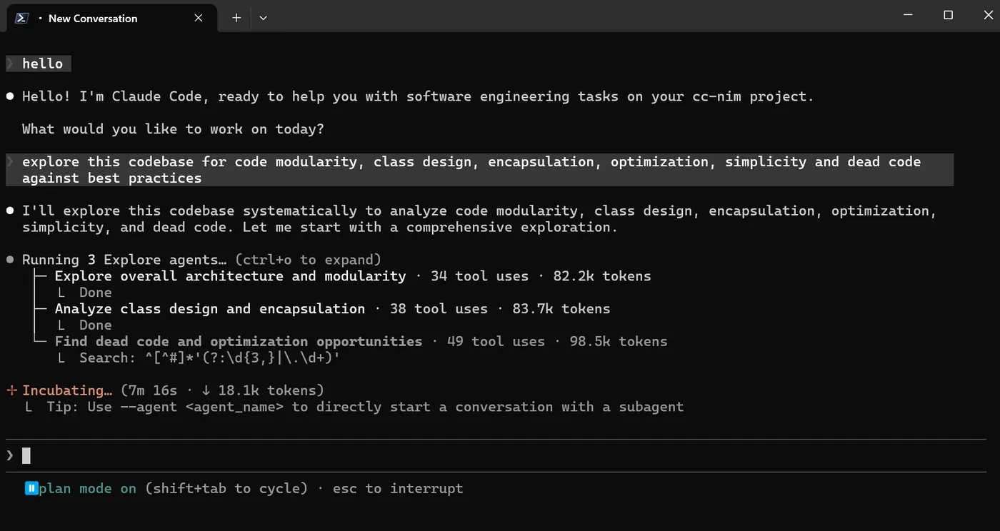
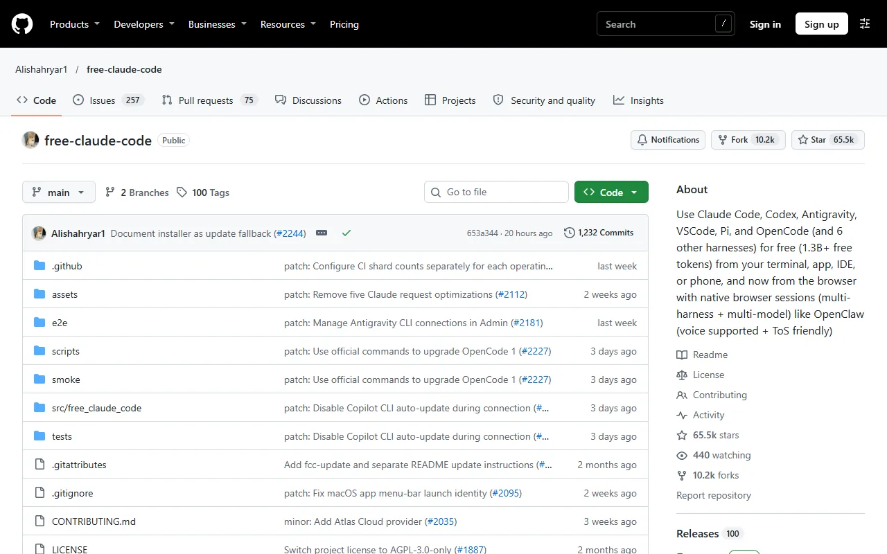
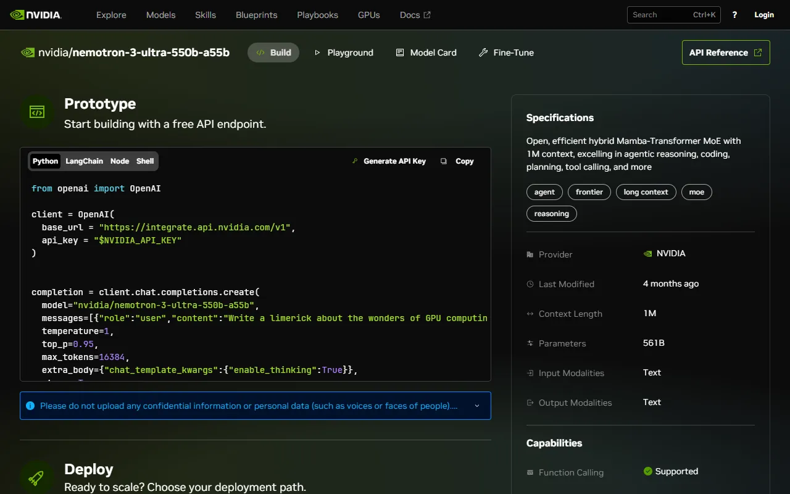

free-claude-code · 2026.10.31 설치
Claude Code를
무료 모델로 돌리기
Claude가 공짜가 되는 게 아니에요. Claude Code 화면은 그대로 쓰고, 뒤에서 답하는 모델만 다른 회사의 무료 모델로 바꿔요.
설치한 순서 보기 →
Claude Code평소 쓰는 터미널 화면
FCC 중계 서버127.0.0.1 · 내 컴퓨터만Opus·Sonnet·Haiku 자리마다 모델 지정, 실패하면 예비 모델로
다른 회사 모델
NVIDIA NIMOpenRouterGroqGeminiDeepSeekOllama+55
써도 될까
좋은 점
돈이 들지 않아요. 간단한 파일 수정이나 실행은 잘해요. 모델 61곳 중에서 골라 쓸 수 있어요.
아쉬운 점
진짜 Claude만큼 잘하지는 않아서 큰 프로젝트에는 약해요. 무료 한도는 업체 사정에 따라 바뀌어요.
알고 쓸 것
내 키와 코드가 이 프로그램을 거쳐 가요. Anthropic이 만든 게 아닌 개인 오픈소스예요(AGPL-3.0, GitHub 스타 약 6.5만).

중요한 작업은 진짜 Claude로 하고, 한도가 찼을 때 쉬운 작업에만 보조로 써요.
설치한 순서
-
설치 스크립트를 먼저 읽기
공식 스크립트를 그냥 실행하면 Codex·Grok 같은 도구 10개가 같이 깔려요. 그래서 본체만 따로 설치했어요. uv가 0.12면 설치가 안 돼서 0.13.6으로 올렸어요.
> uv tool install free-claude-code==6.18.5 --python cpython-3.14.10-windows-x86_64-none -
NVIDIA 무료 API 키 받기
build.nvidia.com 로그인 → 휴대폰 인증(+82) → API 키 만들기(12개월)
키는 만들 때 한 번만 보여요. 바로 저장해 두세요.
build.nvidia.com의 기본 모델 화면. 오른쪽 위 Generate API Key에서 키를 만들어요. -
설정 파일에 키와 모델 적기
~/.fcc/.env# 키 줄은 생략 MODEL=nvidia_nim/nvidia/nemotron-3-ultra-550b-a55b MODEL_HAIKU=nvidia_nim/deepseek-ai/deepseek-v4.1-flash MODEL_FALLBACKS=nvidia_nim/deepseek-ai/deepseek-v4.1-flash HOST=127.0.0.1 # 기본값 0.0.0.0은 같은 와이파이에 열려요
-
실행
작업할 폴더에서
fcc-claude를 입력해요. 평소처럼claude를 입력하면 진짜 Claude가 그대로 열려요.> fcc-claude hello.py 만들어서 1~100 합 실행해 줘 hello.py 작성 → python hello.py 5050 # 22초
NVIDIA 무료 모델 테스트
Nemotron 3 Ultra기본
~1초
DeepSeek V4.1 Flash예비
~15초
GLM 5.3 Flash
22초
MiniMax M3.1 Flash
35초
Kimi K2.6
404
Qwen3 Coder
410
Nemotron 3 Super
404
Nemotron 3.5 Lightning
시간 초과
쓸 때 알아 둘 것
헷갈리는 점
- 모델이 자기를 "Claude Opus"라고 소개해도 실제로는 다른 모델이에요. 안내문 때문에 그렇게 말해요.
- 실제로 어떤 모델이 답했는지는
~/.fcc/logs/server.log에서 볼 수 있어요. - 중계 서버는 창을 닫아도 계속 켜져 있어요.
지우기
> uv tool uninstall free-claude-code > rm -r ~/.fcc